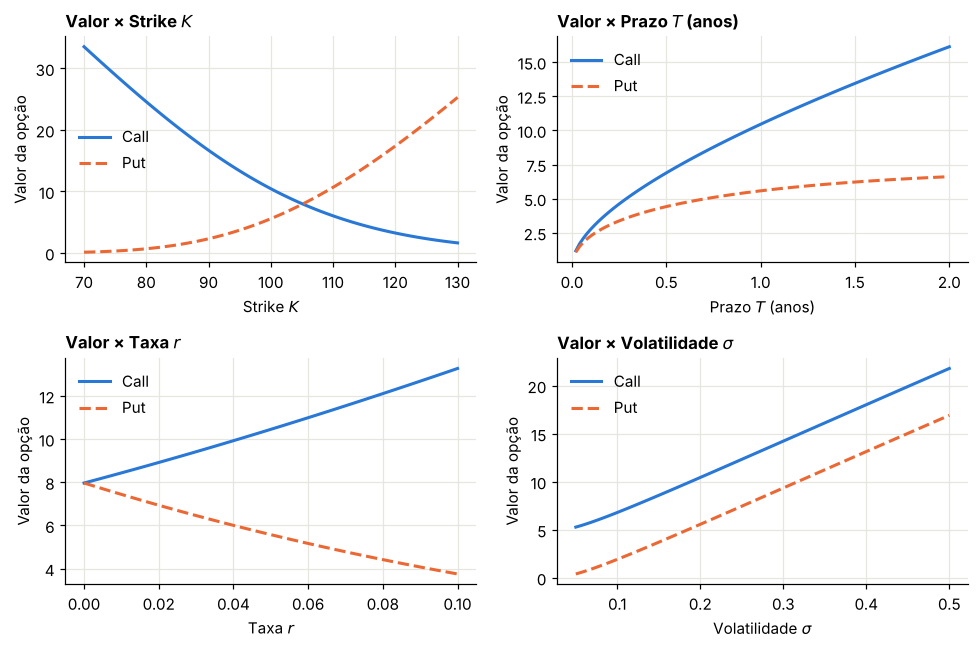
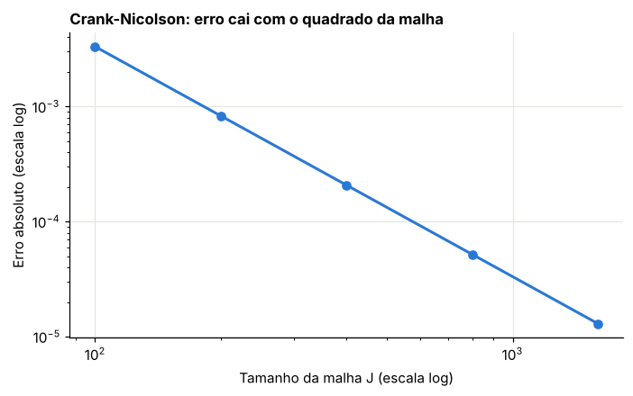
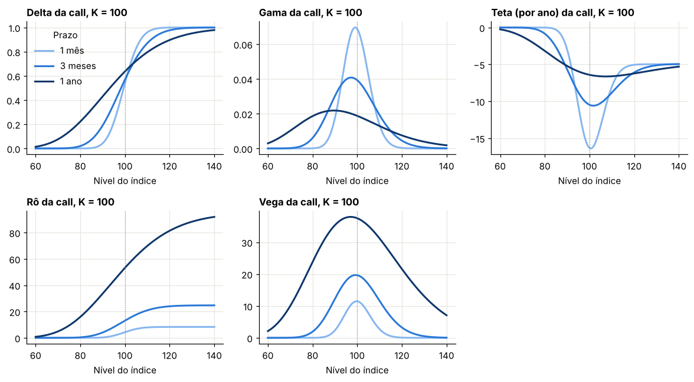
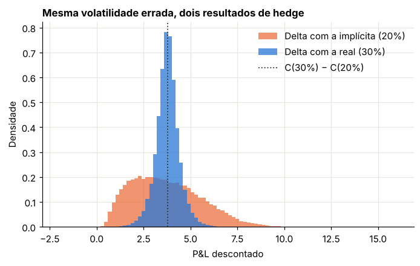

Módulo 5 — Black-Scholes-Merton: a EDP, a fórmula e as gregas#
Introdução#
O modelo de Black, Scholes e Merton, de 1973, é o ponto de referência de toda a teoria de derivativos. Ele supõe que o preço do ativo segue um movimento browniano geométrico, com volatilidade constante, e que se pode negociar continuamente sem custos.
Sob essas hipóteses, uma opção pode ser replicada de forma perfeita combinando o ativo e a conta remunerada, rebalanceando a carteira a cada instante. Dessa replicação sai uma equação diferencial parcial que o preço da opção precisa satisfazer, e nela a taxa de retorno esperada do ativo desaparece: o preço depende apenas da volatilidade. Resolvendo a equação, ou calculando a esperança neutra ao risco do Capítulo 4, obtém-se a fórmula de Black-Scholes.
As derivadas do preço em relação às variáveis do problema, as gregas (delta, gama, vega, theta e rô), medem as sensibilidades da opção e orientam o hedge. O capítulo deduz a equação, a fórmula e as gregas e verifica cada uma numericamente. Black-Scholes não é o modelo final deste livro, mas é a linguagem em que o mercado cota opções (pela volatilidade implícita) e o referencial contra o qual medimos os modelos mais ricos.
Curso: Derivativos com Python, a partir de Derivatives Analytics with Python (Y. Hilpisch, Wiley, 2015). Este módulo cobre: seções 5.1 a 5.3 do livro. A árvore binomial (§5.4) fica para o Módulo 6.
O que você vai conseguir fazer ao final#
Deduzir a equação de Black-Scholes por replicação, sem supor neutralidade ao risco.
Deduzir a fórmula por dois caminhos independentes e ver por que eles coincidem.
Resolver a EDP numericamente, inclusive para payoffs sem fórmula.
Deduzir e usar as cinco gregas.
Explicar a relação entre gama, teta e volatilidade realizada.
Medir o que acontece quando se faz hedge com a volatilidade errada.
Onde estamos#
Nos módulos anteriores, a fórmula BSM foi caixa-preta. Agora temos as ferramentas para abri-la: Itô, replicação e medida neutra ao risco.
0. Preparação#
import numpy as np
import pandas as pd
import matplotlib.pyplot as plt
import mpmath as mp
import sympy as sy
from scipy.linalg import solve_banded
from scipy.stats import norm
from IPython.display import display
AZUL, LARANJA, VERDE, CINZA = "#2a78d6", "#eb6834", "#1baf7a", "#8a8a84"
RAMPA3 = ["#86b6ef", "#2a78d6", "#0d366b"]
plt.rcParams.update({
"figure.figsize": (7.2, 4.0), "figure.dpi": 110,
"axes.spines.top": False, "axes.spines.right": False,
"axes.grid": True, "grid.color": "#e6e5df", "grid.linewidth": 0.8,
"axes.axisbelow": True, "axes.titlesize": 11, "axes.titleweight": "bold",
"axes.titlelocation": "left", "lines.linewidth": 2.0, "legend.frameon": False,
"font.size": 10,
})
def f3(x):
"""Formata com três casas decimais no padrão brasileiro."""
return f"{x:,.3f}".replace(",", "§").replace(".", ",").replace("§", ".")
def tabela(df):
"""Exibe um DataFrame com os números reais em três casas decimais."""
def fmt(v):
if isinstance(v, (float, np.floating)):
return "n/d" if np.isnan(v) else f3(v)
return v
display(df.map(fmt))
_checks = {"n": 0}
def ok(condicao, mensagem):
"""Verificação do laboratório: interrompe o notebook se a conta não fechar."""
assert bool(condicao), f"FALHOU: {mensagem}"
_checks["n"] += 1
print(f"OK — {mensagem}")
print("Ambiente pronto.")
Ambiente pronto.
1. O modelo#
Livro: §5.2.1
Dois ativos negociados. O título sem risco cresce à taxa constante \(r\):
O índice segue um browniano geométrico. Partimos da dinâmica real, sob \(P\), com retorno esperado \(\mu\):
O livro já parte da dinâmica neutra ao risco, com \(r\) no lugar de \(\mu\). Preferimos começar com \(\mu\), porque assim a EDP mostra por si só que o retorno esperado não importa. Na dedução com \(r\), esse resultado teria sido embutido na hipótese.
Hipóteses de mercado perfeito: negociação contínua, sem custos, sem restrições a posições, volatilidade e juros constantes, sem dividendos. Estamos num índice, e o tratamento de dividendos é o tema do Exercício 3.
2. A equação de Black-Scholes#
Livro: §5.2.2
Queremos o valor de um direito cujo preço depende apenas de \(S\) e \(t\), \(V(S, t)\).
Passo 1: aplicar Itô a \(V\)#
Passo 2: montar a carteira replicante#
Compramos \(\phi_t\) unidades do índice e \(\psi_t\) títulos, com valor \(\Pi = \phi S + \psi B\). Pela condição de autofinanciamento (Módulo 3), a variação do valor vem só dos ganhos de mercado:
Passo 3: igualar os termos aleatórios#
Queremos \(\Pi = V\) em todos os instantes. Para os coeficientes de \(dZ\) coincidirem:
Passo 4: igualar os termos em \(dt\)#
Substituindo \(\phi = V_S\):
O termo \(\mu S V_S\) aparece nos dois lados e se cancela. Sobra:
Passo 5: eliminar \(\psi\)#
Como \(\Pi = V\), temos \(\psi B = V - S V_S\). Substituindo:
Rearrumando, chegamos à equação de Black-Scholes:
Observe três pontos:
\(\mu\) sumiu. O motivo é o cancelamento do Passo 4: o hedge elimina a exposição à tendência.
A equação vale para qualquer derivativo cujo valor dependa só de \((S, t)\). O que distingue uma call de uma put é a condição final \(V(S, T) = h(S)\).
O termo em \(S\) tem coeficiente \(r\), não \(\mu\). Foi essa substituição que deu origem à ideia de precificação neutra ao risco.
Errata importante do livro. Na passagem para a equação (5.6), o livro escreve \(r\big(V - \partial V/\partial S\big)\) em vez de \(r\big(V - S\,\partial V/\partial S\big)\), e a própria equação (5.6) está impressa sem o fator \(rS\) no primeiro termo, como \(\frac{\partial V}{\partial S} + \dots\). A forma correta é a do quadro acima. O Laboratório 2.1 mostra que a versão impressa não é satisfeita pela fórmula.
Observação sobre a dedução do livro. Ele usa a carteira \(\Pi = V - \Delta S\) e trata \(\Delta\) como constante no intervalo. Essa carteira não é autofinanciada, e a conta só funciona porque \(\Delta\) é mantido fixo em \(d\Pi\). O caminho por replicação, seguido acima, é o de Merton e dispensa esse cuidado.
2.1 Lendo a equação: gama e teta#
Com \(\Delta = V_S\), \(\Gamma = V_{SS}\) e \(\Theta = V_t\), temos
Com juros zero, \(\Theta = -\tfrac12\sigma^2S^2\Gamma\): o que o titular ganha em convexidade, perde em passagem do tempo. Veremos o significado disso em P&L na Seção 7.
2.2 Da EDP à esperança: Feynman-Kac#
Aplique Itô a \(e^{-rt}V(S_t,t)\) sob \(Q\), em que \(dS = rS\,dt + \sigma S\,dZ^Q\):
O parêntese é a própria EDP, igual a zero. Sobra um martingale. Portanto \(e^{-rt}V_t = \mathbb{E}^Q_t[e^{-rT}h(S_T)]\). A EDP e a esperança são a mesma coisa, escrita de duas formas. Este é o teorema de Feynman-Kac.
Laboratório 2.1 — A fórmula satisfaz a EDP?#
Escrevemos a fórmula de forma simbólica, derivamos e avaliamos o resíduo com 50 dígitos em pontos aleatórios.
S_s, K_s, tau_s, r_s, sig_s = sy.symbols("S K tau r sigma", positive=True)
d1_s = (sy.log(S_s / K_s) + (r_s + sig_s**2 / 2) * tau_s) / (sig_s * sy.sqrt(tau_s))
d2_s = d1_s - sig_s * sy.sqrt(tau_s)
N_s = lambda x: (1 + sy.erf(x / sy.sqrt(2))) / 2
C_s = S_s * N_s(d1_s) - K_s * sy.exp(-r_s * tau_s) * N_s(d2_s)
# Em t, com tau = T - t: V_t = -V_tau
Vt, Vs, Vss = -sy.diff(C_s, tau_s), sy.diff(C_s, S_s), sy.diff(C_s, S_s, 2)
correta = Vt + r_s * S_s * Vs + sig_s**2 * S_s**2 * Vss / 2 - r_s * C_s
impressa = Vs + sig_s**2 * S_s**2 * Vss / 2 + Vt - r_s * C_s
rng = np.random.default_rng(601)
linhas = []
for _ in range(6):
p = {S_s: rng.uniform(50, 150), K_s: rng.uniform(50, 150), tau_s: rng.uniform(0.1, 2), r_s: rng.uniform(0.01, 0.1), sig_s: rng.uniform(0.1, 0.5)}
linhas.append({"S": float(p[S_s]), "K": float(p[K_s]), "Resíduo na EDP correta": abs(float(correta.evalf(50, subs=p))), "Resíduo em (5.6) como impressa": abs(float(impressa.evalf(50, subs=p)))})
res = pd.DataFrame(linhas)
tabela(res)
ok((res["Resíduo na EDP correta"] < 1e-30).all(), "a fórmula BSM satisfaz a EDP com 50 dígitos")
ok((res["Resíduo em (5.6) como impressa"] > 1e-3).all(), "a equação como impressa no livro não é satisfeita")
| S | K | Resíduo na EDP correta | Resíduo em (5.6) como impressa | |
|---|---|---|---|---|
| 0 | 132,546 | 50,277 | 0,000 | 9,666 |
| 1 | 110,102 | 108,779 | 0,000 | 2,151 |
| 2 | 98,423 | 98,129 | 0,000 | 5,143 |
| 3 | 108,703 | 116,086 | 0,000 | 2,807 |
| 4 | 118,032 | 51,157 | 0,000 | 9,989 |
| 5 | 67,668 | 51,857 | 0,000 | 1,681 |
OK — a fórmula BSM satisfaz a EDP com 50 dígitos
OK — a equação como impressa no livro não é satisfeita
3. A fórmula, por dois caminhos#
Livro: §5.2.3
Caminho A: integrando a esperança#
Para uma call com prazo restante \(\tau = T - t\), sob \(Q\):
Passo 1: quando a call paga? \(S_T > K\) equivale a \(z > -d_2\), com
Passo 2: separar o valor em dois termos.
Passo 3: termo II. Pela simetria da normal, \(\int_{-d_2}^\infty\varphi = N(d_2)\). Logo, \(\text{II} = Ke^{-r\tau}N(d_2)\).
Passo 4: termo I. Substituindo \(S_T\), o fator \(e^{-r\tau}\) cancela \(e^{r\tau}\):
Completando o quadrado, \(-\tfrac12\sigma^2\tau + \sigma\sqrt\tau z - \tfrac12z^2 = -\tfrac12(z - \sigma\sqrt\tau)^2\). Com \(w = z - \sigma\sqrt\tau\):
Resultado:
O significado de \(N(d_1)\). No Passo 4, o que apareceu foi a densidade reponderada pelo fator \(S_T/(Se^{r\tau})\). É uma mudança de medida de Girsanov: é a medida em que o índice é o numerário. Assim, \(N(d_2)\) é a probabilidade de exercício sob \(Q\), e \(N(d_1)\) é a probabilidade de exercício sob a medida do índice.
Caminho B: resolvendo a EDP#
Passo 1: variável de tempo restante. Com \(\tau = T - t\), temos \(V_t = -V_\tau\), e o problema vira uma condição inicial \(V(S, 0) = h(S)\).
Passo 2: tirar o desconto e o drift. Mude variáveis:
Passo 3: calcular as derivadas, pela regra da cadeia:
Passo 4: substituir em \(V_\tau = rSV_S + \tfrac12\sigma^2S^2V_{SS} - rV\):
Tudo se cancela, exceto:
É a equação do calor: a BSM é difusão pura depois da mudança de variáveis.
Passo 5: solução. A solução da equação do calor é a convolução da condição inicial com um núcleo gaussiano:
Com \(y = x + \sigma\sqrt\tau\,z\), tem-se \(e^y = S\exp[(r - \tfrac12\sigma^2)\tau + \sigma\sqrt\tau z]\). É exatamente a integral do Caminho A. Duas teorias, uma só conta.
A put#
Compre índice e put, e venda a call. Em \(T\) o resultado é \(K\) em qualquer cenário: se \(S_T < K\), tem-se \(S_T + (K - S_T)\); se \(S_T \ge K\), tem-se \(S_T - (S_T - K)\). Logo, \(S + P - C = Ke^{-r\tau}\), de onde, usando \(1 - N(x) = N(-x)\),
Laboratório 3.1 — Verificações#
A opção de referência do livro: \(S_0 = K = 100\), \(T = 1\), \(r = 5\%\), \(\sigma = 20\%\).
def d12(S, K, tau, r, sig):
d1 = (np.log(S / K) + (r + 0.5 * sig**2) * tau) / (sig * np.sqrt(tau))
return d1, d1 - sig * np.sqrt(tau)
def bsm(S, K, tau, r, sig, tipo="call"):
d1, d2 = d12(S, K, tau, r, sig)
if tipo == "call":
return S * norm.cdf(d1) - K * np.exp(-r * tau) * norm.cdf(d2)
return K * np.exp(-r * tau) * norm.cdf(-d2) - S * norm.cdf(-d1)
S0, K0, T0, r0, s0 = 100.0, 100.0, 1.0, 0.05, 0.20
C0, P0 = float(bsm(S0, K0, T0, r0, s0)), float(bsm(S0, K0, T0, r0, s0, "put"))
rng = np.random.default_rng(602)
n = 4_000_000
z = rng.standard_normal(n)
ST = S0 * np.exp((r0 - 0.5 * s0**2) * T0 + s0 * np.sqrt(T0) * z)
amostra = np.exp(-r0 * T0) * np.maximum(ST - K0, 0)
ep = amostra.std(ddof=1) / np.sqrt(n)
d1, d2 = d12(S0, K0, T0, r0, s0)
peso = ST / (S0 * np.exp(r0 * T0))
tabela(pd.DataFrame([
{"Grandeza": "Call pela fórmula", "Valor": C0},
{"Grandeza": "Call por Monte Carlo", "Valor": float(amostra.mean())},
{"Grandeza": "Put pela fórmula", "Valor": P0},
{"Grandeza": "C − P", "Valor": C0 - P0},
{"Grandeza": "S − K·exp(−rT)", "Valor": S0 - K0 * np.exp(-r0 * T0)},
{"Grandeza": "N(d2)", "Valor": float(norm.cdf(d2))},
{"Grandeza": "P(S_T>K) sob Q, simulada", "Valor": float((ST > K0).mean())},
{"Grandeza": "N(d1)", "Valor": float(norm.cdf(d1))},
{"Grandeza": "P(S_T>K) sob a medida do índice, simulada", "Valor": float(np.mean(peso * (ST > K0)))},
]))
ok(abs(C0 - 10.450584) < 1e-5 and abs(P0 - 5.573526) < 1e-5, "valores coincidem com a referência do livro (cerca de 10,4 e 5,6)")
ok(abs(amostra.mean() - C0) < 4 * ep, "Monte Carlo confere com a fórmula")
ok(abs((C0 - P0) - (S0 - K0 * np.exp(-r0 * T0))) < 1e-10, "paridade put-call")
ok(abs((ST > K0).mean() - norm.cdf(d2)) < 0.001, "N(d2) é a probabilidade de exercício sob Q")
ok(abs(np.mean(peso * (ST > K0)) - norm.cdf(d1)) < 0.001, "N(d1) é a probabilidade de exercício sob a medida do índice")
| Grandeza | Valor | |
|---|---|---|
| 0 | Call pela fórmula | 10,451 |
| 1 | Call por Monte Carlo | 10,444 |
| 2 | Put pela fórmula | 5,574 |
| 3 | C − P | 4,877 |
| 4 | S − K·exp(−rT) | 4,877 |
| 5 | N(d2) | 0,560 |
| 6 | P(S_T>K) sob Q, simulada | 0,560 |
| 7 | N(d1) | 0,637 |
| 8 | P(S_T>K) sob a medida do índice, simulada | 0,637 |
OK — valores coincidem com a referência do livro (cerca de 10,4 e 5,6)
OK — Monte Carlo confere com a fórmula
OK — paridade put-call
OK — N(d2) é a probabilidade de exercício sob Q
OK — N(d1) é a probabilidade de exercício sob a medida do índice
Laboratório 3.2 — Dependência dos parâmetros#
Reproduzimos as Figuras 5.1 e 5.2 do livro em um único painel. Note como o valor da put cai para prazos longos, quando dentro do dinheiro, e como o sinal do efeito dos juros difere entre call e put.
Errata menor: no item 1 da lista do livro, “K > 100 for the put, OTM” deveria ser \(K < 100\).
base = dict(S=S0, K=K0, tau=T0, r=r0, sig=s0)
grades = {
"K": (np.linspace(70, 130, 121), "Strike $K$"),
"tau": (np.linspace(0.02, 2.0, 100), "Prazo $T$ (anos)"),
"r": (np.linspace(0.0, 0.10, 100), "Taxa $r$"),
"sig": (np.linspace(0.05, 0.5, 100), "Volatilidade $\\sigma$"),
}
fig, eixos = plt.subplots(2, 2, figsize=(9, 6))
for ax, (par, (g, rot)) in zip(eixos.ravel(), grades.items()):
c = np.array([float(bsm(**{**base, par: v})) for v in g])
p = np.array([float(bsm(**{**base, par: v}, tipo="put")) for v in g])
ax.plot(g, c, color=AZUL, label="Call")
ax.plot(g, p, color=LARANJA, ls="--", label="Put")
ax.set_title(f"Valor × {rot}")
ax.set_xlabel(rot)
ax.set_ylabel("Valor da opção")
ax.legend()
plt.tight_layout()
plt.show()
prazos = np.linspace(0.05, 30, 300)
put_itm = bsm(50.0, 100.0, prazos, 0.05, 0.2, "put")
ok(put_itm[-1] < put_itm[0], "put europeia bem dentro do dinheiro pode perder valor com o prazo")

OK — put europeia bem dentro do dinheiro pode perder valor com o prazo
4. Resolvendo a EDP no computador#
Conteúdo além do livro; útil para payoffs sem fórmula
4.1 Montagem em log-preço#
Com \(x = \ln S\) e prazo restante \(\tau\), a EDP vira
Numa malha com passo \(\Delta x\), aproximamos as derivadas por diferenças centrais. Em cada ponto interior:
4.2 Crank-Nicolson#
A média entre os passos de tempo \(n\) e \(n+1\) dá erro de segunda ordem:
Em cada passo, resolve-se um sistema tridiagonal, de custo linear.
Cuidado: a quina do payoff. Crank-Nicolson não amortece oscilações de alta frequência, e a quina em \(K\) as gera. A solução usual, de Rannacher, troca os primeiros passos por passos implícitos, que suavizam a condição inicial.
Nas bordas, usamos o comportamento assintótico: para uma call, \(V \to 0\) embaixo e \(V \to S - Ke^{-r\tau}\) em cima.
Laboratório 4.1 — Convergência e gregas de graça#
Colocamos o nó central exatamente em \(\ln S_0\) e, ao dobrar a malha, medimos o erro. Em segunda ordem, o erro deve cair por um fator próximo de 4.
def cn(payoff, borda, S0, K, T, r, sig, J, nt, rannacher=4):
"""Crank-Nicolson em log-preço, com passos implícitos iniciais. Devolve malha e valores."""
L = 6 * sig * np.sqrt(T) + abs(np.log(K / S0))
dx = L / J
x = np.log(S0) + dx * np.arange(-J, J + 1)
Sg = np.exp(x)
V = payoff(Sg)
a, b = 0.5 * sig**2, r - 0.5 * sig**2
l_, c_, u_ = a / dx**2 - b / (2 * dx), -2 * a / dx**2 - r, a / dx**2 + b / (2 * dx)
dtau = T / nt
passos = [(dtau / 2, 1.0)] * rannacher + [(dtau, 0.5)] * (nt - rannacher // 2)
tau = 0.0
for h, th in passos:
tau_novo = tau + h
lo, hi = borda(Sg[0], tau_novo), borda(Sg[-1], tau_novo)
lo_v, hi_v = borda(Sg[0], tau), borda(Sg[-1], tau)
interior = V[1:-1]
rhs = interior + (1 - th) * h * (l_ * V[:-2] + c_ * interior + u_ * V[2:])
rhs[0] += th * h * l_ * lo
rhs[-1] += th * h * u_ * hi
ab = np.zeros((3, interior.size))
ab[0, 1:] = -th * h * u_
ab[1, :] = 1 - th * h * c_
ab[2, :-1] = -th * h * l_
novo = solve_banded((1, 1), ab, rhs)
V = np.r_[lo, novo, hi]
tau = tau_novo
return x, V, J, dx
pay_call = lambda S: np.maximum(S - K0, 0.0)
borda_call = lambda S, tau: 0.0 if S < K0 else S - K0 * np.exp(-r0 * tau)
linhas = []
for J in [100, 200, 400, 800, 1600]:
x, V, c_, dx = cn(pay_call, borda_call, S0, K0, T0, r0, s0, J, J)
linhas.append({"Malha J": J, "Valor numérico": float(V[c_]), "Erro": abs(float(V[c_]) - C0)})
conv = pd.DataFrame(linhas)
conv["Razão do erro"] = conv["Erro"].shift(1) / conv["Erro"]
tabela(conv)
fig, ax = plt.subplots()
ax.loglog(conv["Malha J"], conv["Erro"], color=AZUL, marker="o", markersize=6)
ax.set_title("Crank-Nicolson: erro cai com o quadrado da malha")
ax.set_xlabel("Tamanho da malha J (escala log)")
ax.set_ylabel("Erro absoluto (escala log)")
plt.show()
ok(3.2 < conv["Razão do erro"].iloc[-1] < 4.8, "convergência de segunda ordem")
ok(conv["Erro"].iloc[-1] < 1e-3, "o erro final é menor que 0,001")
# Gregas a partir da malha
J = 1600
x, V, c_, dx = cn(pay_call, borda_call, S0, K0, T0, r0, s0, J, J)
Vx = (V[c_ + 1] - V[c_ - 1]) / (2 * dx)
Vxx = (V[c_ + 1] - 2 * V[c_] + V[c_ - 1]) / dx**2
delta_pde = Vx / S0
gama_pde = (Vxx - Vx) / S0**2
d1, _ = d12(S0, K0, T0, r0, s0)
tabela(pd.DataFrame([
{"Grega": "Delta", "Malha da EDP": float(delta_pde), "Fórmula": float(norm.cdf(d1))},
{"Grega": "Gama", "Malha da EDP": float(gama_pde), "Fórmula": float(norm.pdf(d1) / (S0 * s0 * np.sqrt(T0)))},
]))
ok(abs(delta_pde - norm.cdf(d1)) < 1e-4 and abs(gama_pde - norm.pdf(d1) / (S0 * s0 * np.sqrt(T0))) < 1e-4, "delta e gama saem da própria malha")
| Malha J | Valor numérico | Erro | Razão do erro | |
|---|---|---|---|---|
| 0 | 100 | 10,447 | 0,003 | n/d |
| 1 | 200 | 10,450 | 0,001 | 4,002 |
| 2 | 400 | 10,450 | 0,000 | 4,001 |
| 3 | 800 | 10,451 | 0,000 | 4,000 |
| 4 | 1600 | 10,451 | 0,000 | 4,000 |

OK — convergência de segunda ordem
OK — o erro final é menor que 0,001
| Grega | Malha da EDP | Fórmula | |
|---|---|---|---|
| 0 | Delta | 0,637 | 0,637 |
| 1 | Gama | 0,019 | 0,019 |
OK — delta e gama saem da própria malha
Laboratório 4.2 — Um payoff diferente#
A mesma EDP resolve qualquer payoff que dependa apenas de \(S_T\): basta trocar a condição final. Testamos com uma digital de 1 mês, que paga 1 se \(S_T > K\), cuja solução é \(e^{-r\tau}N(d_2)\). Usamos passos de tempo grandes de propósito, para expor o problema: em descontinuidades, é ainda mais importante amortecer os primeiros passos. A coluna conta quantas vezes a curva de valores muda de direção; o valor correto é monotônico.
pay_dig = lambda S: np.where(S > K0, 1.0, np.where(np.isclose(S, K0), 0.5, 0.0))
borda_dig = lambda S, tau: 0.0 if S < K0 else float(np.exp(-r0 * tau))
T_dig = 1 / 12
ref_dig = float(np.exp(-r0 * T_dig) * norm.cdf(d12(S0, K0, T_dig, r0, s0)[1]))
linhas = []
for ran, nome in [(0, "Crank-Nicolson puro"), (4, "Com passos implícitos iniciais")]:
x, V, c_, dx = cn(pay_dig, borda_dig, S0, K0, T_dig, r0, s0, 800, 20, rannacher=ran)
osc = int(np.sum(np.diff(np.sign(np.diff(V))) != 0))
linhas.append({"Esquema": nome, "Valor": float(V[c_]), "Fórmula": ref_dig, "Erro": abs(float(V[c_]) - ref_dig), "Mudanças de direção na malha": osc})
d_ = pd.DataFrame(linhas).set_index("Esquema")
tabela(d_.reset_index())
ok(d_.loc["Com passos implícitos iniciais", "Erro"] < 2e-3, "o solver numérico reproduz a digital")
ok(d_.loc["Crank-Nicolson puro", "Mudanças de direção na malha"] > d_.loc["Com passos implícitos iniciais", "Mudanças de direção na malha"], "sem amortecimento, a solução oscila perto do strike")
ok(d_.loc["Crank-Nicolson puro", "Erro"] > 100 * d_.loc["Com passos implícitos iniciais", "Erro"], "sem amortecimento, o erro no strike é enorme")
| Esquema | Valor | Fórmula | Erro | Mudanças de direção na malha | |
|---|---|---|---|---|---|
| 0 | Crank-Nicolson puro | 0,898 | 0,515 | 0,383 | 4 |
| 1 | Com passos implícitos iniciais | 0,517 | 0,515 | 0,001 | 0 |
OK — o solver numérico reproduz a digital
OK — sem amortecimento, a solução oscila perto do strike
OK — sem amortecimento, o erro no strike é enorme
5. As gregas#
Livro: §5.3
As gregas medem a sensibilidade do valor aos parâmetros. Usamos a identidade do Módulo 2, que simplifica tudo:
Delta#
O colchete é zero pela identidade. (Usamos também \(\partial d_2/\partial S = \partial d_1/\partial S\).) Para a put, pela paridade, \(\Delta_P = \Delta_C - 1 = -N(-d_1)\).
Gama#
Pela paridade, é igual para call e put.
Vega#
Como visto no Módulo 2: \(\mathcal{V} = S\varphi(d_1)\sqrt\tau\). É igual para call e put.
Rô#
\(\partial C/\partial r\) recebe duas contribuições. O colchete com a identidade se cancela outra vez, e sobra a derivada do desconto: \(\rho_C = K\tau e^{-r\tau}N(d_2)\). Para a put, \(\rho_P = -K\tau e^{-r\tau}N(-d_2)\).
Teta#
Em vez de derivar de novo, usamos a própria EDP: \(\Theta = rC - rS\Delta - \tfrac12\sigma^2S^2\Gamma\). Substituindo:
Para a put: \(\Theta_P = -\dfrac{S\varphi(d_1)\sigma}{2\sqrt\tau} + rKe^{-r\tau}N(-d_2)\).
O teta é a variação do valor por unidade de tempo decorrido. Para uma call, é sempre negativo com \(r \ge 0\). Para uma put bem dentro do dinheiro, pode ser positivo, resultado do valor no tempo negativo do Módulo 1.
Onde o gama é máximo#
O senso comum diz que no dinheiro. Vamos conferir. Derivando \(\ln\Gamma = \ln\varphi(d_1) - \ln S - \ln(\sigma\sqrt\tau)\) em relação a \(S\):
Próximo do strike para prazos curtos, mas abaixo dele para prazos longos.
Laboratório 5.1 — Fórmulas contra diferenças finitas#
def gregas(S, K, tau, r, sig, tipo="call"):
d1, d2 = d12(S, K, tau, r, sig)
gama = norm.pdf(d1) / (S * sig * np.sqrt(tau))
vega = S * norm.pdf(d1) * np.sqrt(tau)
decaimento = -S * norm.pdf(d1) * sig / (2 * np.sqrt(tau))
if tipo == "call":
return {"delta": norm.cdf(d1), "gama": gama, "teta": decaimento - r * K * np.exp(-r * tau) * norm.cdf(d2), "ro": K * tau * np.exp(-r * tau) * norm.cdf(d2), "vega": vega}
return {"delta": norm.cdf(d1) - 1, "gama": gama, "teta": decaimento + r * K * np.exp(-r * tau) * norm.cdf(-d2), "ro": -K * tau * np.exp(-r * tau) * norm.cdf(-d2), "vega": vega}
def dif_finita(S, K, tau, r, sig, tipo):
f = lambda **k: float(bsm(**{**dict(S=S, K=K, tau=tau, r=r, sig=sig), **k}, tipo=tipo))
h = 1e-4
return {
"delta": (f(S=S + h) - f(S=S - h)) / (2 * h),
"gama": (f(S=S + 1e-2) - 2 * f() + f(S=S - 1e-2)) / 1e-4,
"teta": -(f(tau=tau + h) - f(tau=tau - h)) / (2 * h),
"ro": (f(r=r + h) - f(r=r - h)) / (2 * h),
"vega": (f(sig=sig + h) - f(sig=sig - h)) / (2 * h),
}
pontos = [(100.0, 100.0, 1.0), (90.0, 100.0, 0.25), (120.0, 100.0, 2.0)]
linhas = []
maior = 0.0
for tipo in ("call", "put"):
for S_, K_, t_ in pontos:
a, b = gregas(S_, K_, t_, r0, s0, tipo), dif_finita(S_, K_, t_, r0, s0, tipo)
maior = max(maior, max(abs(float(a[k]) - b[k]) for k in a))
linhas.append({"Tipo": tipo, "S": S_, "Prazo": t_, **{k: float(v) for k, v in a.items()}})
tabela(pd.DataFrame(linhas))
print("Maior diferença entre fórmula e diferenças finitas:", f3(maior))
ok(maior < 1e-3, "as fórmulas das gregas coincidem com as diferenças finitas")
d = gregas(S0, K0, T0, r0, s0)
ok(abs(float(d["teta"]) - (r0 * C0 - r0 * S0 * float(d["delta"]) - 0.5 * s0**2 * S0**2 * float(d["gama"]))) < 1e-10, "o teta é o que a EDP determina")
ok(float(gregas(40.0, 100.0, 1.0, 0.05, 0.2, "put")["teta"]) > 0, "put bem dentro do dinheiro tem teta positivo")
Sg = np.linspace(50, 160, 2201)
for tau_ in [1 / 12, 1.0, 2.0]:
g_ = gregas(Sg, 100.0, tau_, 0.05, 0.3)["gama"]
ok(abs(Sg[np.argmax(g_)] - 100.0 * np.exp(-(0.05 + 1.5 * 0.3**2) * tau_)) < 0.1, f"pico do gama em S* para prazo {f3(tau_)}")
| Tipo | S | Prazo | delta | gama | teta | ro | vega | |
|---|---|---|---|---|---|---|---|---|
| 0 | call | 100,000 | 1,000 | 0,637 | 0,019 | -6,414 | 53,232 | 37,524 |
| 1 | call | 90,000 | 0,250 | 0,190 | 0,030 | -5,691 | 4,046 | 12,204 |
| 2 | call | 120,000 | 2,000 | 0,873 | 0,006 | -5,407 | 145,535 | 35,368 |
| 3 | put | 100,000 | 1,000 | -0,363 | 0,019 | -1,658 | -41,890 | 37,524 |
| 4 | put | 90,000 | 0,250 | -0,810 | 0,030 | -0,753 | -20,643 | 12,204 |
| 5 | put | 120,000 | 2,000 | -0,127 | 0,006 | -0,883 | -35,433 | 35,368 |
Maior diferença entre fórmula e diferenças finitas: 0,000
OK — as fórmulas das gregas coincidem com as diferenças finitas
OK — o teta é o que a EDP determina
OK — put bem dentro do dinheiro tem teta positivo
OK — pico do gama em S* para prazo 0,083
OK — pico do gama em S* para prazo 1,000
OK — pico do gama em S* para prazo 2,000
Laboratório 5.2 — O formato das gregas#
Em vez das superfícies 3D do livro, usamos fatias por prazo, para comparar os formatos na mesma escala de índice.
Sg = np.linspace(60, 140, 321)
prazos_g = [(1 / 12, "1 mês"), (0.25, "3 meses"), (1.0, "1 ano")]
fig, eixos = plt.subplots(2, 3, figsize=(10.8, 6))
eixos = eixos.ravel()
nomes = {"delta": "Delta", "gama": "Gama", "teta": "Teta (por ano)", "ro": "Rô", "vega": "Vega"}
for ax, (k, rot) in zip(eixos, nomes.items()):
for (t_, nome), cor in zip(prazos_g, RAMPA3):
ax.plot(Sg, gregas(Sg, 100.0, t_, r0, s0)[k], color=cor, label=nome)
ax.set_title(f"{rot} da call, K = 100")
ax.set_xlabel("Nível do índice")
ax.axvline(100, color=CINZA, lw=0.8, ls=":")
eixos[0].legend(title="Prazo")
eixos[5].axis("off")
plt.tight_layout()
plt.show()

Leitura. O gama e o teta se concentram perto do strike nos prazos curtos: são os riscos do vencimento próximo. O vega e o rô crescem com o prazo.
6. Aproximação por gregas#
Uma expansão de Taylor em todas as variáveis, até segunda ordem nos termos relevantes, é:
As duas gregas cruzadas são
No Módulo 1, a aproximação linear errou feio no cenário de crash. Vamos ver o quanto cada termo recupera. A abordagem padronizada do FRTB segue a mesma lógica com delta, vega e curvatura; lá, a curvatura é calculada por reprecificação sob choque, justamente porque a expansão falha em movimentos grandes.
Laboratório 6.1 — Quanto cada termo explica#
K_, S_, t_, r_, s_ = 8000.0, 8000.0, 1.0, 0.025, 0.20
d1, d2 = d12(S_, K_, t_, r_, s_)
g0 = {k: float(v) for k, v in gregas(S_, K_, t_, r_, s_).items()}
vanna = float(-norm.pdf(d1) * d2 / s_)
volga = float(g0["vega"] * d1 * d2 / s_)
v0 = float(bsm(S_, K_, t_, r_, s_))
cenarios = {"Índice −1%": (-80.0, 0.0), "Índice −10%": (-800.0, 0.0), "Vol +5 p.p.": (0.0, 0.05), "Crash: −20% e vol +15 p.p.": (-1600.0, 0.15)}
linhas = []
for nome, (dS, ds) in cenarios.items():
completa = float(bsm(S_ + dS, K_, t_, r_, s_ + ds)) - v0
primeira = g0["delta"] * dS + g0["vega"] * ds
com_gama = primeira + 0.5 * g0["gama"] * dS**2
completa2 = com_gama + 0.5 * volga * ds**2 + vanna * dS * ds
linhas.append({"Cenário": nome, "Reprecificação": completa, "1ª ordem": primeira, "+ Gama": com_gama, "+ Volga e Vanna": completa2, "Erro final": completa2 - completa})
tay = pd.DataFrame(linhas).set_index("Cenário")
tabela(tay.reset_index())
nom, med = "Crash: −20% e vol +15 p.p.", "Índice −10%"
ok(abs(tay.loc[med, "Erro final"]) < 0.1 * abs(tay.loc[med, "1ª ordem"] - tay.loc[med, "Reprecificação"]), "em choque moderado, a segunda ordem recupera mais de 90% do erro")
ok(abs(tay.loc[nom, "Erro final"]) > 100, "no crash, a expansão continua errando muito")
| Cenário | Reprecificação | 1ª ordem | + Gama | + Volga e Vanna | Erro final | |
|---|---|---|---|---|---|---|
| 0 | Índice −1% | -46,337 | -47,121 | -46,343 | -46,343 | -0,005 |
| 1 | Índice −10% | -389,352 | -471,208 | -393,414 | -393,414 | -4,062 |
| 2 | Vol +5 p.p. | 155,621 | 155,588 | 155,588 | 155,698 | 0,077 |
| 3 | Crash: −20% e vol +15 p.p. | -295,955 | -475,652 | -164,475 | -151,821 | 144,133 |
OK — em choque moderado, a segunda ordem recupera mais de 90% do erro
OK — no crash, a expansão continua errando muito
Leitura. No choque de 10%, o gama resolve quase todo o erro. No crash, a expansão de segunda ordem troca um erro por outro: sai de uma perda exagerada para uma perda subestimada. Um choque de 20% com 15 pontos de volatilidade está fora do raio em que Taylor funciona, e nem Volga e Vanna salvam. A conclusão prática é a do Módulo 1: stress se faz com reprecificação completa.
7. O que o delta hedge realmente faz#
7.1 A carteira localmente sem risco#
Numa pequena variação, a carteira \(V - \Delta S\) não tem risco de primeira ordem, e sobra
Em um passo, o desvio-padrão de um retorno não protegido escala com \(\sqrt{\Delta t}\). O da carteira protegida escala com \(\Delta t\).
7.2 Gama, teta e volatilidade realizada#
Considere a posição comprada na opção, com hedge. O retorno em cada dia, em versão com \(r = 0\), vale
O titular ganha se o quadrado do retorno superar a variância precificada, e perde caso contrário. Comprar opção com hedge é apostar na volatilidade realizada, contra a implícita.
7.3 Hedge com volatilidade errada#
Compramos a call a uma implícita \(\sigma_i\), e a volatilidade verdadeira é \(\sigma_r > \sigma_i\). Há duas possibilidades de hedge:
Delta com \(\sigma_r\): o lucro é determinístico, e igual a \(C(\sigma_r) - C(\sigma_i)\).
Delta com \(\sigma_i\): o lucro em valor presente é \(\int_0^T e^{-rt}\tfrac12\Gamma^iS^2(\sigma_r^2 - \sigma_i^2)\,dt\), uma quantidade dependente da trajetória: ela é maior se o índice ficar perto do strike, onde o gama é grande.
A teoria diz que acertar a volatilidade rende um lucro certo, enquanto usar a implícita rende um lucro aleatório. Mas esse lucro aleatório nunca fica negativo, porque o integrando é sempre positivo. Ao menos em tempo contínuo.
Laboratório 7.1 — Um passo#
rng = np.random.default_rng(603)
n = 2_000_000
linhas = []
for dias in [16, 8, 4, 2, 1]:
dt = dias / 252
z = rng.standard_normal(n)
S1 = S0 * np.exp((0.08 - 0.5 * s0**2) * dt + s0 * np.sqrt(dt) * z)
dV = bsm(S1, K0, T0 - dt, r0, s0) - C0
d_inic = float(gregas(S0, K0, T0, r0, s0)["delta"])
prot = dV - d_inic * (S1 - S0)
linhas.append({"Dias": dias, "Desvio da opção": dV.std(), "Desvio da opção protegida": prot.std()})
um = pd.DataFrame(linhas)
tabela(um)
inc_nao = np.polyfit(np.log(um["Dias"]), np.log(um["Desvio da opção"]), 1)[0]
inc_sim = np.polyfit(np.log(um["Dias"]), np.log(um["Desvio da opção protegida"]), 1)[0]
print("Inclinação sem hedge:", f3(inc_nao), "| Com hedge:", f3(inc_sim))
ok(abs(inc_nao - 0.5) < 0.03 and abs(inc_sim - 1.0) < 0.05, "sem hedge o risco escala com √Δt; com hedge, com Δt")
| Dias | Desvio da opção | Desvio da opção protegida | |
|---|---|---|---|
| 0 | 16 | 3,277 | 0,339 |
| 1 | 8 | 2,293 | 0,169 |
| 2 | 4 | 1,613 | 0,084 |
| 3 | 2 | 1,137 | 0,042 |
| 4 | 1 | 0,803 | 0,021 |
Inclinação sem hedge: 0,507 | Com hedge: 1,002
OK — sem hedge o risco escala com √Δt; com hedge, com Δt
Laboratório 7.2 — Hedge com a volatilidade certa e com a errada#
Compramos a call a \(\sigma_i = 20\%\), mas o índice oscila a \(\sigma_r = 30\%\), com \(\mu = 12\%\). Hedge diário, em 40 mil trajetórias. Descontamos o P&L para a data 0.
def delta_call(S, K, tau, r, sig):
return norm.cdf(d12(S, K, tau, r, sig)[0])
def hedge_comprado(S, K, T, r, sig_preco, sig_hedge):
"""P&L descontado de comprar a call a sig_preco e vender delta calculado com sig_hedge."""
M = S.shape[0] - 1
dt = T / M
d0 = delta_call(S[0], K, T, r, sig_hedge)
caixa = -float(bsm(S[0, 0], K, T, r, sig_preco)) + d0 * S[0]
d_ant = d0
for i in range(1, M):
caixa *= np.exp(r * dt)
novo = delta_call(S[i], K, T - i * dt, r, sig_hedge)
caixa += (novo - d_ant) * S[i]
d_ant = novo
caixa *= np.exp(r * dt)
final = caixa - d_ant * S[M] + np.maximum(S[M] - K, 0)
return np.exp(-r * T) * final
rng = np.random.default_rng(604)
M, I = 252, 40_000
sig_i, sig_r, mu_r = 0.20, 0.30, 0.12
Z = rng.standard_normal((M, I))
S = S0 * np.exp(np.vstack([np.zeros(I), np.cumsum((mu_r - 0.5 * sig_r**2) / M + sig_r * np.sqrt(1 / M) * Z, axis=0)]))
pnl_r = hedge_comprado(S, K0, T0, r0, sig_i, sig_r)
pnl_i = hedge_comprado(S, K0, T0, r0, sig_i, sig_i)
ref = float(bsm(S0, K0, T0, r0, sig_r) - bsm(S0, K0, T0, r0, sig_i))
tabela(pd.DataFrame([
{"Hedge": "Delta com a volatilidade real (30%)", "P&L médio": float(pnl_r.mean()), "Desvio-padrão": float(pnl_r.std(ddof=1)), "Pior caso": float(pnl_r.min()), "Melhor caso": float(pnl_r.max())},
{"Hedge": "Delta com a volatilidade implícita (20%)", "P&L médio": float(pnl_i.mean()), "Desvio-padrão": float(pnl_i.std(ddof=1)), "Pior caso": float(pnl_i.min()), "Melhor caso": float(pnl_i.max())},
]))
print("Lucro teórico C(30%) − C(20%):", f3(ref))
faixa = (-2, 16)
fig, ax = plt.subplots()
ax.hist(pnl_i, bins=90, range=faixa, density=True, color=LARANJA, alpha=0.7, label="Delta com a implícita (20%)")
ax.hist(pnl_r, bins=90, range=faixa, density=True, color=AZUL, alpha=0.75, label="Delta com a real (30%)")
ax.axvline(ref, color="#333330", lw=1.2, ls=":", label="C(30%) − C(20%)")
ax.set_title("Mesma volatilidade errada, dois resultados de hedge")
ax.set_xlabel("P&L descontado")
ax.set_ylabel("Densidade")
ax.legend()
plt.show()
ok(abs(pnl_r.mean() - ref) < 0.05, "com a volatilidade real, o lucro médio é C(σ_r) − C(σ_i)")
ok(pnl_i.std() > 2 * pnl_r.std(), "com a volatilidade implícita, o lucro é bem mais incerto")
ok(np.mean(pnl_i > 0) > 0.95, "mesmo assim, o lucro com a implícita quase sempre é positivo")
| Hedge | P&L médio | Desvio-padrão | Pior caso | Melhor caso | |
|---|---|---|---|---|---|
| 0 | Delta com a volatilidade real (30%) | 3,777 | 0,622 | 0,498 | 9,233 |
| 1 | Delta com a volatilidade implícita (20%) | 3,713 | 1,836 | 0,300 | 12,717 |
Lucro teórico C(30%) − C(20%): 3,781

OK — com a volatilidade real, o lucro médio é C(σ_r) − C(σ_i)
OK — com a volatilidade implícita, o lucro é bem mais incerto
OK — mesmo assim, o lucro com a implícita quase sempre é positivo
Leitura. Em tempo contínuo, o hedge com a volatilidade real daria lucro exatamente constante. O desvio que resta nessa linha vem do rebalanceamento diário, o erro de \(1/\sqrt{N}\) do Módulo 1. A diferença entre as duas linhas é o efeito da dependência da trajetória: as duas têm médias próximas, mas o desvio é cerca de três vezes maior com a implícita.
7.4 Neutralizar o gama#
O erro de rebalanceamento vem do gama. Para reduzi-lo, acrescenta-se outra opção à carteira: escolhemos a quantidade \(n\) de opção auxiliar de modo que o gama total seja zero e, depois, ajustamos o delta com o índice:
Laboratório 7.3 — Delta contra delta-gama, com rebalanceamento semanal#
Vendemos uma call de 3 meses. A auxiliar é uma call de 1 ano, com o mesmo strike.
def erro_hedge(S, K, T, r, sig, K_aux=None, T_aux=None):
"""Erro de hedge final de uma call vendida. Se K_aux é dado, faz delta-gama."""
M = S.shape[0] - 1
dt = T / M
n_aux, phi = np.zeros(S.shape[1]), np.zeros(S.shape[1])
caixa = np.full(S.shape[1], float(bsm(S[0, 0], K, T, r, sig)))
for i in range(M):
tau = T - i * dt
s_i = S[i]
ga, de = gregas(s_i, K, tau, r, sig)["gama"], gregas(s_i, K, tau, r, sig)["delta"]
if K_aux is not None:
aux = gregas(s_i, K_aux, T_aux - i * dt, r, sig)
novo_n = ga / aux["gama"]
novo_phi = de - novo_n * aux["delta"]
caixa -= (novo_n - n_aux) * bsm(s_i, K_aux, T_aux - i * dt, r, sig)
n_aux = novo_n
else:
novo_phi = de
caixa -= (novo_phi - phi) * s_i
phi = novo_phi
caixa *= np.exp(r * dt)
fim = caixa + phi * S[M] - np.maximum(S[M] - K, 0)
if K_aux is not None:
fim += n_aux * bsm(S[M], K_aux, T_aux - T, r, sig)
return fim
rng = np.random.default_rng(605)
M, I = 13, 60_000
Z = rng.standard_normal((M, I))
S = S0 * np.exp(np.vstack([np.zeros(I), np.cumsum((0.1 - 0.5 * s0**2) * 0.25 / M + s0 * np.sqrt(0.25 / M) * Z, axis=0)]))
e_d = erro_hedge(S, K0, 0.25, r0, s0)
e_g = erro_hedge(S, K0, 0.25, r0, s0, K_aux=K0, T_aux=1.0)
tabela(pd.DataFrame([
{"Hedge": "Só delta", "Erro médio": float(e_d.mean()), "Desvio-padrão": float(e_d.std(ddof=1))},
{"Hedge": "Delta e gama", "Erro médio": float(e_g.mean()), "Desvio-padrão": float(e_g.std(ddof=1))},
]))
ok(e_g.std() < 0.5 * e_d.std(), "neutralizar o gama reduz o erro de hedge em mais da metade")
| Hedge | Erro médio | Desvio-padrão | |
|---|---|---|---|
| 0 | Só delta | -0,009 | 0,924 |
| 1 | Delta e gama | -0,001 | 0,231 |
OK — neutralizar o gama reduz o erro de hedge em mais da metade
8. Síntese#
A EDP sai da replicação: o hedge com \(\Delta = V_S\) cancela o aleatório e, junto, a tendência.
A fórmula resulta de uma integral lognormal ou da equação do calor; é a mesma conta, e Feynman-Kac explica por quê.
\(N(d_2)\) é a probabilidade de exercício sob \(Q\); \(N(d_1)\), sob a medida do índice.
O teta é determinado pela EDP a partir do delta e do gama.
Gama e teta são dois lados da mesma moeda: comprar opção com hedge é apostar em volatilidade realizada contra implícita.
Hedge com a volatilidade certa dá lucro certo; com a implícita, dá lucro aleatório.
A EDP numérica estende o modelo para payoffs sem fórmula.
9. Erratas do livro neste trecho#
Local |
Problema |
|---|---|
Passagem para (5.6) |
\(r(V - \partial V/\partial S)\) deveria ser \(r(V - S\,\partial V/\partial S)\) |
Equação (5.6) |
falta o fator \(rS\) no primeiro termo: o correto é \(rS\,\partial V/\partial S\) |
§5.2.2 |
a carteira \(\Pi = V - \Delta S\) não é autofinanciada; a dedução usa \(\Delta\) fixo no intervalo |
§5.2.3, item 1 |
“\(K > 100\) for the put, OTM” deveria ser \(K < 100\) |
10. Exercícios#
Exercício 1. Mostre que \(V = S\) e \(V = e^{rt}\) satisfazem a EDP. O que eles representam?
Solução
\(V = S\): \(V_t = 0\), \(V_S = 1\), \(V_{SS} = 0\), e \(rS - rS = 0\). \(V = e^{rt}\): \(V_t = re^{rt}\), e \(re^{rt} - re^{rt} = 0\). São os dois ativos negociados.
Exercício 2. Sem refazer contas, deduza o \(\Delta\) da carteira formada por comprar uma call e vender uma put, com o mesmo strike. Por que o resultado é tão simples?
Solução
\(\Delta_C - \Delta_P = N(d_1) - (N(d_1) - 1) = 1\). Pela paridade, a carteira equivale a um termo: \(S - Ke^{-r\tau}\), com delta 1.
Exercício 3. Se o índice paga dividendo contínuo com taxa \(y\), a EDP troca \(r\) por \(r - y\) no termo em \(V_S\). Qual a fórmula da call?
Solução
\(C = Se^{-y\tau}N(d_1) - Ke^{-r\tau}N(d_2)\), com \(d_1 = \big[\ln(S/K) + (r - y + \tfrac12\sigma^2)\tau\big]/(\sigma\sqrt\tau)\). O índice é trocado pelo seu valor sem dividendos, \(Se^{-y\tau}\).
Exercício 4. Deduza a condição para a qual o valor de uma call fica com \(\Theta\) igual a \(-rKe^{-r\tau}\) quando \(\sigma \to 0\), com a opção dentro do dinheiro a termo.
Solução
Com \(\sigma \to 0\) e \(S > Ke^{-r\tau}\), temos \(d_1, d_2 \to \infty\), \(\varphi(d_1) \to 0\) e \(N(d_2) \to 1\). Sobra \(\Theta = -rKe^{-r\tau}\): a opção vale \(S - Ke^{-r\tau}\), e só o desconto do strike muda com o tempo.
Exercício 5. Em hedge_comprado, faça o caso \(\sigma_r < \sigma_i\) (por exemplo, compre a 30% num mundo a 20%). O que muda?
Solução
Os sinais se invertem: com o delta a \(\sigma_r\), o prejuízo é quase determinístico e igual a \(C(\sigma_r) - C(\sigma_i) < 0\). Com o delta a \(\sigma_i\), o prejuízo é dependente de trajetória, em geral maior próximo do strike.
print(f"Módulo 5 concluído: {_checks['n']} verificações aprovadas.")
Módulo 5 concluído: 27 verificações aprovadas.